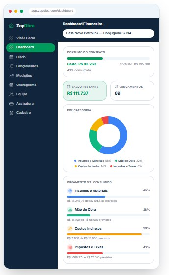

Esqueça as planilhas complexas e o tempo perdido no escritório. Controle custos, registre o diário de obra e evite prejuízos enviando apenas um áudio ou foto pelo Zap.
Dificilmente você para no escritório para fazer registros: as notas se perdem e os lançamentos ficam pendentes.
O medo de ter prejuízo por não saber exatamente quanto já gastou e quanto recebeu até o momento.
Perder o controle de atrasos e ocorrências, dificultando a cobrança de aditivos do cliente.
Em poucos passos, a inteligência artificial passa a trabalhar por você.
Mande a foto da NF ou um áudio (ex: "o cliente atrasou o material") pelo WhatsApp.
Não precisa digitar nada. Nossa inteligência artificial lê a nota ou escuta o áudio e categoriza o gasto ou a ocorrência.
Acesse relatórios visuais e claros sobre o andamento financeiro da obra para você e para o seu cliente.
Cada foto de nota e cada áudio enviado no WhatsApp alimenta o Dashboard Financeiro com saldo restante, consumo do contrato e orçamento por categoria — exatamente como você vê aqui, pronto para mostrar ao cliente.

Cadastre obras e despesas diretamente pelo WhatsApp, de qualquer lugar, a qualquer hora.
Acompanhe todas as suas obras e despesas em tempo real em um painel visual e simples.
Envie comprovantes, fotos ou áudios. O cadastro automático é feito pela nossa IA.
Todas as informações ficam armazenadas em nuvem com criptografia e backup automático.
Acesse pelo computador, tablet ou smartphone, sincronizado em tempo real.
Gere relatórios personalizados para análise de custos e acompanhamento de obras.
Menos burocracia, mais margem. O ZapObra transforma cada mensagem do dia em dado confiável para a sua administração.
Testar GratuitamenteNúmeros acumulados pelos construtores que já trocaram a planilha pelo WhatsApp.
"Eu vivia com medo de fechar orçamento errado e acabar devendo no fim da obra. Hoje mando o áudio na hora da compra e sei meu saldo real todo dia."
"Parei de levar sacola de nota fiscal pra casa. Foto no Zap e pronto. No fim do mês o lucro apurado sai certinho, sem planilha."
"Registro a ocorrência no dia que acontece. Quando preciso cobrar aditivo, tenho tudo documentado e o cliente aceita sem discussão."
Respostas rápidas para as dúvidas mais comuns sobre o ZapObra.
Comece hoje e tenha o financeiro da sua obra em ordem antes do próximo pagamento.
Testar Gratuitamente